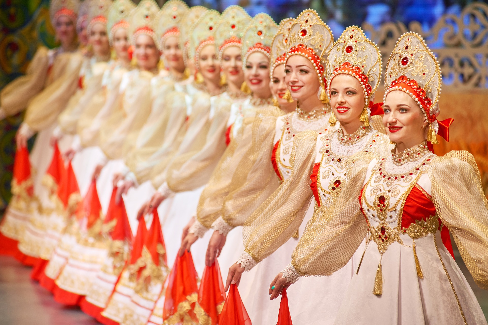

|
Cultura:Para mas informacion vea Cultura de Rusia. La cultura de Rusia es una rica y compleja amalgama de influencias históricas, étnicas y geográficas que se han desarrollado a lo largo de más de mil años. Este vasto país, el más grande del mundo en términos de superficie, alberga una diversidad de tradiciones y manifestaciones culturales que reflejan su historia tumultuosa, su variedad étnica y su influencia tanto de Occidente como de Oriente. |
La literatura rusa es una de las joyas más preciadas de su cultura, conocida por su profundidad filosófica y su exploración de la condición humana. Escritores como Aleksandr Pushkin, considerado el padre de la literatura rusa moderna, Fiódor Dostoyevski, Lev Tolstói y Antón Chéjov han dejado un legado que ha influenciado no solo la literatura sino también el pensamiento global. Dostoyevski, con obras como "Crimen y castigo" y "Los hermanos Karamázov", exploró las profundidades del alma humana y las cuestiones morales. Tolstói, con "Guerra y paz" y "Anna Karénina", ofreció un retrato detallado de la sociedad rusa y sus transformaciones.
El teatro y la danza también ocupan un lugar central en la cultura rusa. El ballet ruso es mundialmente famoso, con compañías icónicas como el Ballet Bolshói de Moscú y el Ballet Mariinski de San Petersburgo. Estos ballets han llevado al escenario algunas de las producciones más aclamadas, como "El lago de los cisnes" y "El cascanueces" de Piotr Ilich Chaikovski. El teatro, por su parte, ha sido una plataforma para la innovación y la experimentación, con figuras como Konstantín Stanislavski, quien desarrolló el método de actuación que lleva su nombre y que ha influido en actores y directores de todo el mundo.
La música clásica rusa ha producido compositores de renombre internacional como Piotr Ilich Chaikovski, Igor Stravinski y Serguéi Rajmáninov. Chaikovski, con sus emotivas sinfonías y ballets, ha dejado una marca indeleble en la música clásica, mientras que Stravinski, conocido por obras revolucionarias como "La consagración de la primavera", ha influido profundamente en la música moderna. La música tradicional rusa también es vibrante, con instrumentos característicos como la balalaica y el domra, y canciones folclóricas que narran historias de amor, guerra y la vida cotidiana.
El arte y la arquitectura rusos reflejan la vasta historia del país y sus influencias culturales. Desde las iglesias ortodoxas con sus distintivas cúpulas doradas y frescos interiores, hasta los palacios barrocos y neoclásicos de San Petersburgo, la arquitectura rusa es un testimonio de su evolución histórica y cultural. Movimientos artísticos como el realismo socialista dominaron la era soviética, mientras que los periodos anteriores y posteriores han visto florecer una rica variedad de estilos y expresiones.
Las tradiciones y festividades rusas son un reflejo de su patrimonio cultural y religioso. Las celebraciones religiosas ortodoxas, como la Pascua y la Navidad, se observan con devoción y son acompañadas por rituales y comidas festivas específicas. La Maslenitsa, una fiesta pagana que celebra el fin del invierno, es una semana de alegría, con la preparación de blinis y otros alimentos, además de actividades como juegos y espectáculos folclóricos. Estas festividades no solo preservan las tradiciones antiguas sino que también fortalecen el sentido de comunidad y continuidad cultural.
El cine ruso, aunque a menudo eclipsado por Hollywood, ha producido cineastas de renombre mundial como Serguéi Eisenstein, conocido por sus innovadoras técnicas de montaje, y Andrei Tarkovsky, cuyas películas poéticas y filosóficas han dejado una profunda huella en el cine de autor global. Durante la era soviética, el cine fue utilizado como una herramienta de propaganda, pero también se convirtió en un medio para la exploración artística y la crítica social.
|
La cultura popular rusa también ha visto un renacimiento en las últimas décadas, con la música pop, el arte contemporáneo y la literatura moderna reflejando las complejidades de la Rusia post-soviética. La juventud rusa, influenciada por tendencias globales, ha adoptado y adaptado estos elementos, creando una vibrante escena cultural urbana que contrasta con las tradiciones más antiguas. En resumen, la cultura de Rusia es una rica tapezaría de influencias y tradiciones que abarca desde la alta literatura y la música clásica hasta las festividades populares y las innovaciones contemporáneas. Esta diversidad cultural no solo refleja la vasta extensión geográfica del país y su historia multifacética, sino también la resiliencia y creatividad del pueblo ruso a lo largo de los siglos. |
 |